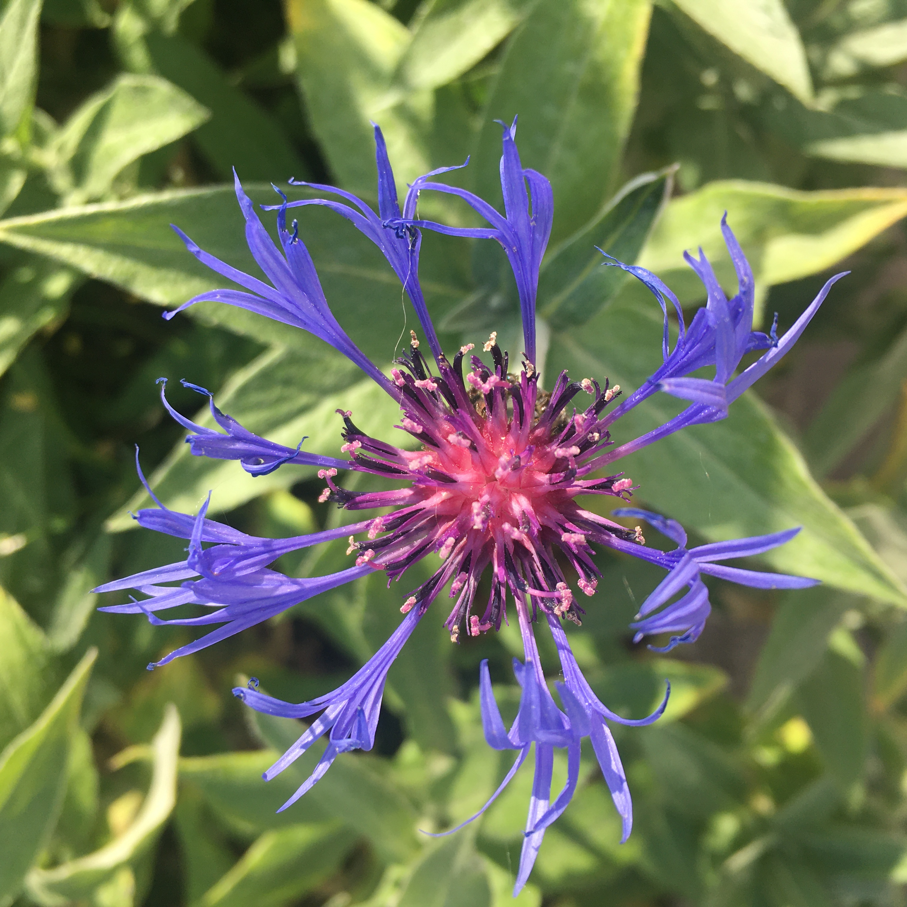

Как я провела это лето...
Июнь


Июнь прошел быстро и насыщенно, так как именно в этом месяце была сессия. Символом начала июня стал василек, который можно видеть на экране. Он был сфотографирован на железнодорожной станции "Гарадзея". Перед тем, как я ехала на первый экзамен. Также 25 июня прошел мой 18-ый день рождения, и родители подарили мне кольцо. Радостную меня также можно увидеть на экране.
Июль

Главным событием июля стала свадьба моего старшего брата. В качестве свадебного подарка я исполнила на фортепиано "Вальс цветов" из балета "Щелкунчик" Петра Ильча Чайковского.
Август
В начале августа я ездила на концерт органной музыки в п. Медведичи, Церковь святых Петра и Павла. Музыканты приехали из Польши, Краковской академии музыки.


В середине августа я с мамой сплавлялись на байдарках по реке Неман.

Также в конце августа я старалась больше проводить времени со своими родственниками, которые на каникулы прилетели Беларусь. Нормальных фотографий нет, но зато есть одна, на которой я еду на велосипеде. Это велопробег, который был в Несвиже в конце августа. Вот так вот!